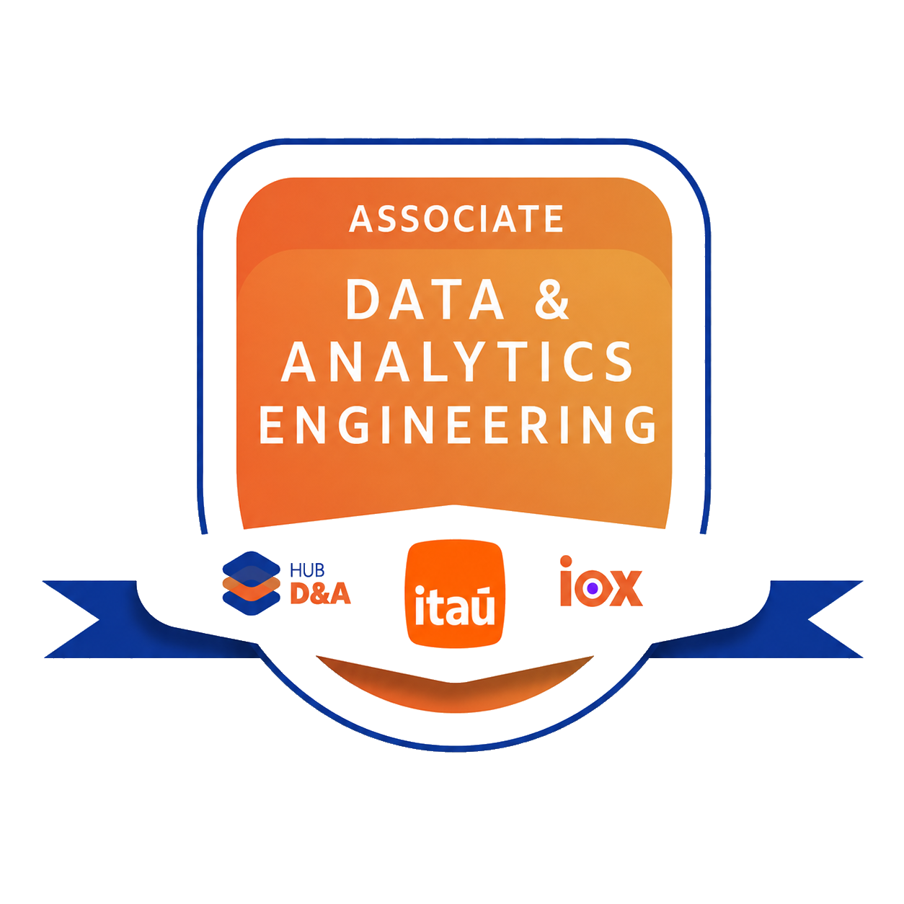
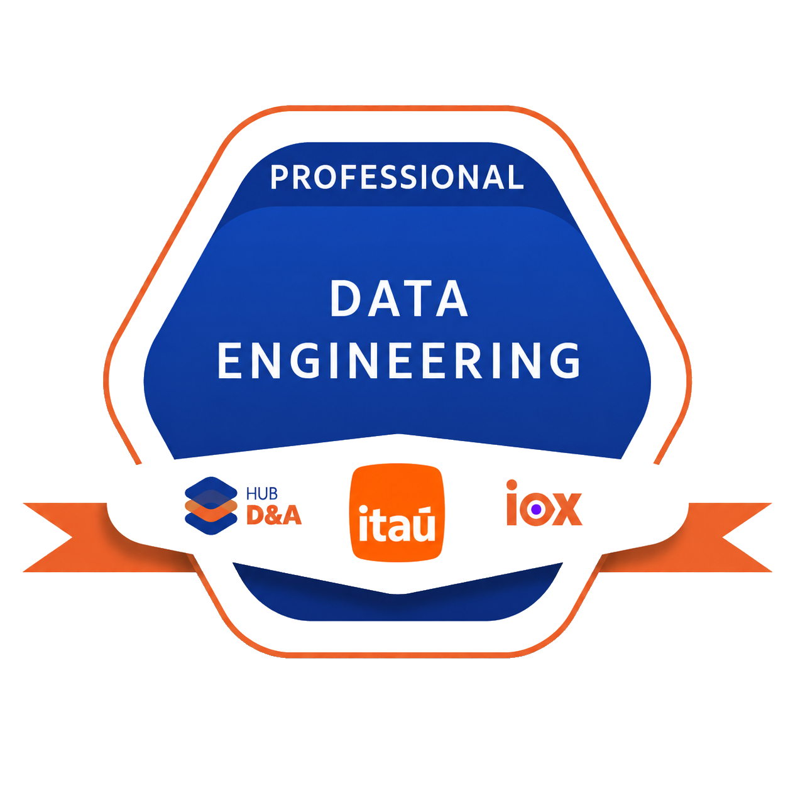

1. Sustentação de rotinas
Atuação operacional no run com sustentação diária de rotinas, acompanhamento de execuções e garantia de estabilidade e disponibilidade em ambiente produtivo.
Olá, meu nome é
Transformar dados brutos em informação acessível e soluções de alta performance é o propósito que me move.
Engenheira de Dados na squad de Modernização e Analytics do Itaú Unibanco. Focada em construir pipelines escaláveis, otimizar modelagens e garantir a governança de dados utilizando Python e o ecossistema AWS.
Minha trajetória na tecnologia é guiada por aprendizado ágil, mentalidade Data-Driven e foco na resolução de problemas complexos. No Itaú Unibanco, atuo em um papel estratégico inserido no contexto de Data Mesh, onde traduzo necessidades de negócio em produtos de dados eficientes, descentralizados, rastreáveis e preparados para escala.
Navego por ferramentas como Athena e AWS Glue garantindo a integridade da informação, cobrindo todo o ciclo desde a ingestão bruta até a entrega de valor em dashboards no QuickSight.
Acredito que a engenharia de dados vai além do código: trata-se de reduzir a distância entre a tecnologia, a qualidade do dado e o impacto real no negócio.
Minha atuação é focada na Engenharia de Dados atuando no run: sustentação de rotinas, modernização de fluxos e pipelines em arquiteturas Data Mesh e habilitação de decisões Data-Driven, garantindo a estabilidade, governança e alta confiabilidade das soluções em produção.
Atuação operacional no run com sustentação diária de rotinas, acompanhamento de execuções e garantia de estabilidade e disponibilidade em ambiente produtivo.
Evolução e modernização de fluxos e pipelines de dados, refatorando arquiteturas para soluções automatizadas, escaláveis e eficientes em ambientes de domínios descentralizados (Data Mesh).
Troubleshooting técnico e diagnóstico rápido ligado diretamente à Engenharia de Dados, investigando causas raízes de falhas para evitar reincidências.
Crio e organizo datasets e produtos de dados em alinhamento aos princípios de Data Mesh, garantindo fonte única de verdade, consistência e governança para impulsionar a cultura Data-Driven.
Registro regras, estruturas e decisões técnicas para garantir continuidade, rastreabilidade e orientação dos times para a evolução dos processos.
Competências Estratégicas
Competências que conectam a cultura Data-Driven, governança descentralizada em Data Mesh e sustentação técnica no dia a dia da engenharia de dados.
Stack utilizada para estruturar dados, automatizar rotinas, sustentar observabilidade de qualidade e disponibilizar análises confiáveis para consumo interno.
Trilha de certificações internas do Itaú Unibanco (Hub D&A / iox), cobrindo da fundação de analytics ao nível profissional de engenharia de dados, complementada pela certificação oficial AWS em nuvem.

Certificação oficial validando conhecimento em computação em nuvem, segurança e infraestrutura, servindo como base para a atuação diária com Athena, Glue e S3.
AWS Certified
Nível mais avançado da trilha Hub D&A, validando autonomia para desenhar pipelines escaláveis, otimizar performance e sustentar governança de dados em produção.
Professional
Segundo nível da trilha: engenharia analítica aplicada, com estruturação de dados para observabilidade e construção de visualizações que sustentam decisão de negócio.
AssociateAplicação prática de Inteligência Artificial Generativa no dia a dia de dados, integrando desde a experimentação com LLMs até o uso estratégico em rotinas analíticas.
PractitionerPrimeiro nível da trilha: fundamentos do ecossistema de dados, com base em governança, qualidade da informação e conceitos essenciais de analytics.
PractitionerSão Paulo, SP · Híbrido • 10 meses total
Squad: Modernização de Engenharia de Dados e Analytics
Responsável pela construção, evolução e sustentação das soluções de dados da squad, com ownership sobre performance, qualidade e governança.
Essa vivência tem aprofundado meu domínio em arquitetura, performance e qualidade de dados. Meu objetivo é evoluir na construção de soluções robustas, contribuindo para a modernização de plataformas e gerando impacto real no negócio.
Primeira experiência profissional em dados: suporte a pipelines, automação e qualidade de software, com forte atuação na comunicação entre áreas.
Essa vivência consolidou minha visão analítica e o domínio de ferramentas de dados e programação, construindo a base para minha evolução até o cargo atual.
Vice-líder geral e liderança de frentes
Estruturação de uma base governada para transformar indicadores de qualidade em self-service confiável, com rastreabilidade desde a exploração até o consumo analítico.
Otimização e padronização da base de dados com aumento de confiabilidade, autonomia analítica e eficiência operacional.
Problema: Dados de qualidade de software estavam dispersos, pouco padronizados e exigiam exploração manual frequente, o que reduzia a confiança nas métricas.
Decisão: Explorar e estruturar os dados com Jupyter Notebooks (AWS Glue), Python, Apache Iceberg e Athena para criar um dataset governado e performático.
Resultado: Implementação de uma fonte única de verdade para sustentar visualizações no QuickSight com mais integridade e autonomia de consumo.
Sinal de sucesso: Disponibilização de datasets confiáveis, menor tempo de resposta para visualização e ganhos de custo e performance.
Pipeline distribuído para transformar arquivos brutos da CVM em camadas analíticas prontas para leitura de tendências e monitoramento de mercado.
Processamento distribuído com Spark, camadas Medallion e leitura analítica preparada para governança e monitoramento de mercado.
Problema: Informes diários de fundos da CVM chegavam em alto volume, com metadados faltantes e baixa padronização, dificultando análises ágeis de tendência.
Decisão: Implementar uma Arquitetura Medallion com PySpark, organizando o fluxo em Bronze, Silver e Gold com Apache Parquet e compressão Snappy.
Resultado: Consolidação de uma fonte única de verdade que permitiu identificar uma euforia no mercado em janeiro de 2024, com captação líquida acima de R$ 109 bilhões.
Sinal de sucesso: Pipeline automatizado, menor tempo de processamento e datasets prontos para dashboards analíticos com governança.
Implementação de frameworks de validação como Great Expectations para garantir integridade dos dados desde o S3 até o consumo final, reduzindo débitos técnicos.
Automação e orquestração de workflows de dados com AWS Step Functions e Airflow, implementando monitoramento, retry e escalabilidade em pipelines de ingestão e transformação.
Vamos conversar?
Atualmente atuo como Analista de Engenharia de Dados Jr no Itaú Unibanco, focada na construção, evolução e sustentação de soluções de dados na squad de Modernização de Engenharia de Dados e Analytics. Estou aberta a conexões e trocas sobre tecnologia e dados.